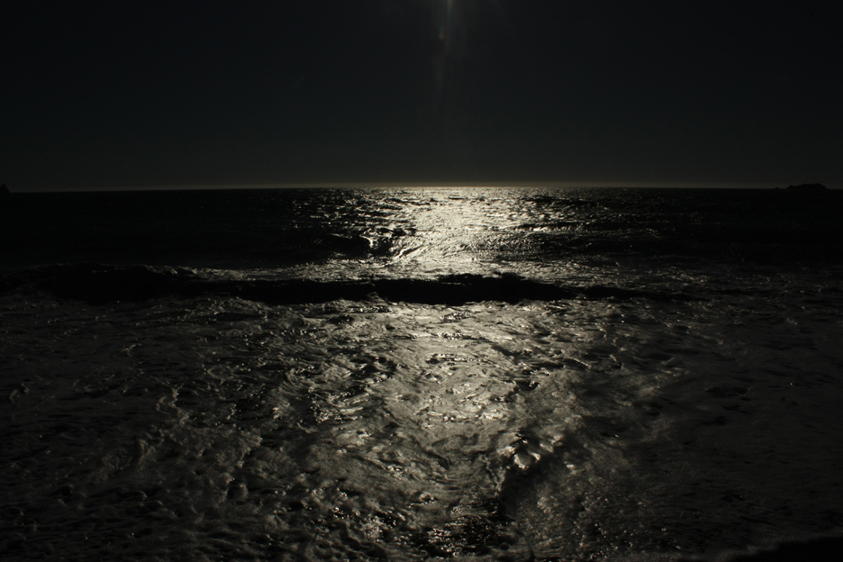

matt phillips
A few things about me
Born and raised in the great Pacific Northwest, my favorite way to spend time is through exploring my home state of Oregon with frequent roadtrips, hiking and camping. I've captured many a landscape image along the way, and have also done a bit of travel blogging covering a 2 month solo camping sabbatical i took winding through the backroads and mountains of Oregon and Northern California.
In my professional life, I've worked in the print production world for about 10 years, developing skills in design, pre-press, photo editing, digital printing and workflow management.

Interests
- Travel
- Hiking
- Food culture
- Oregon History